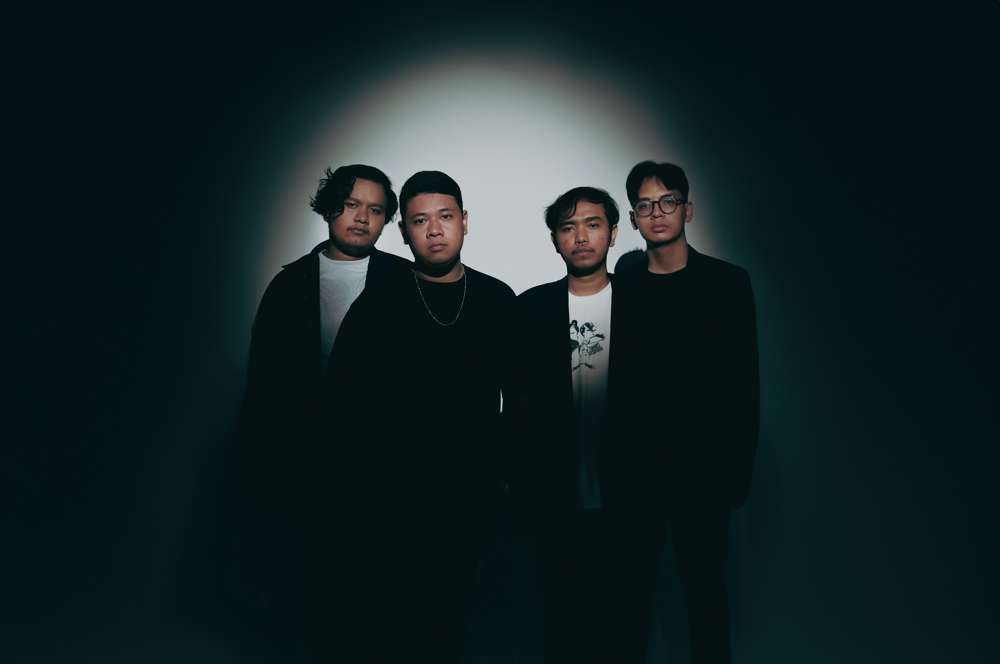
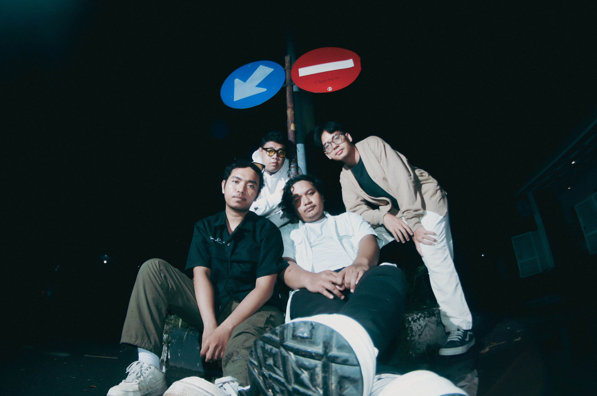
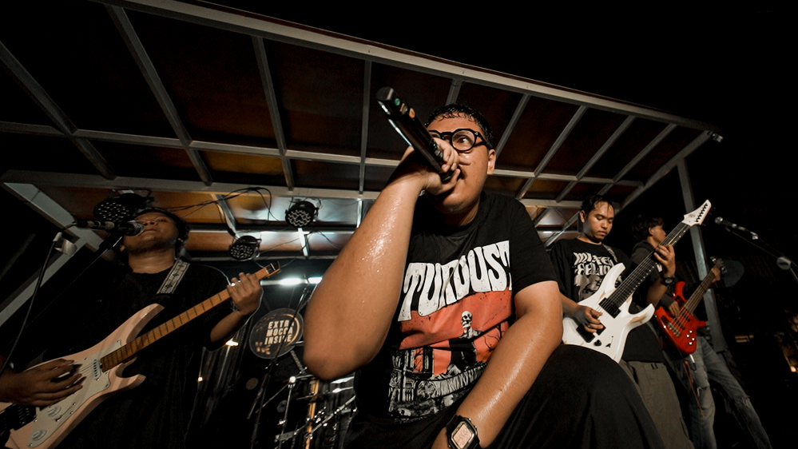
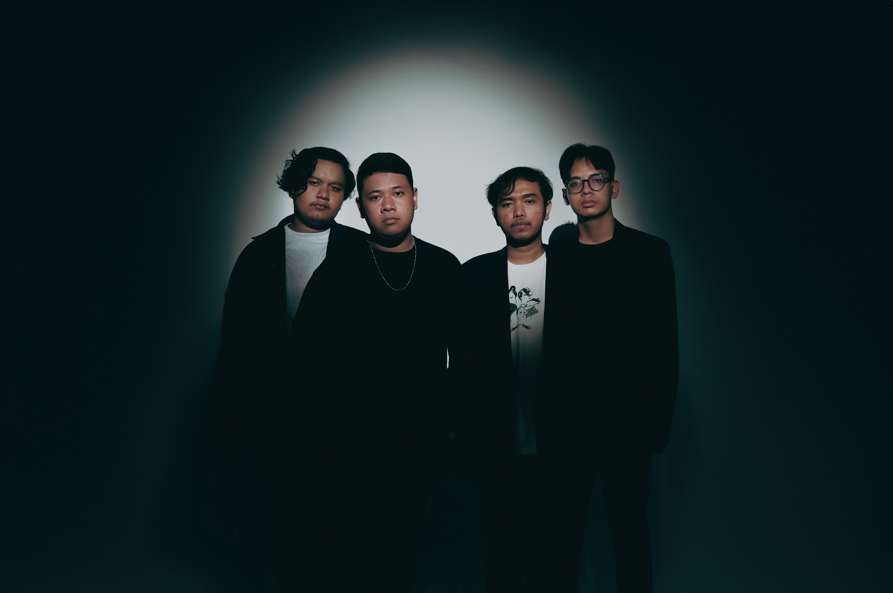
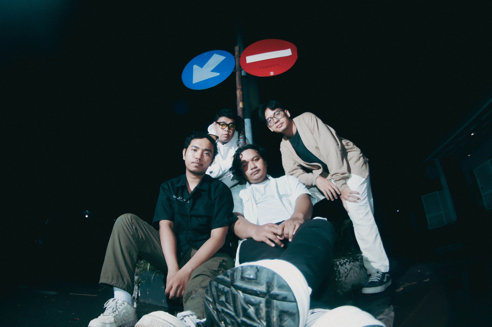
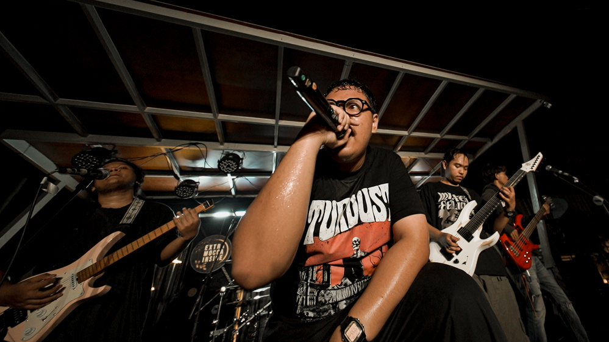
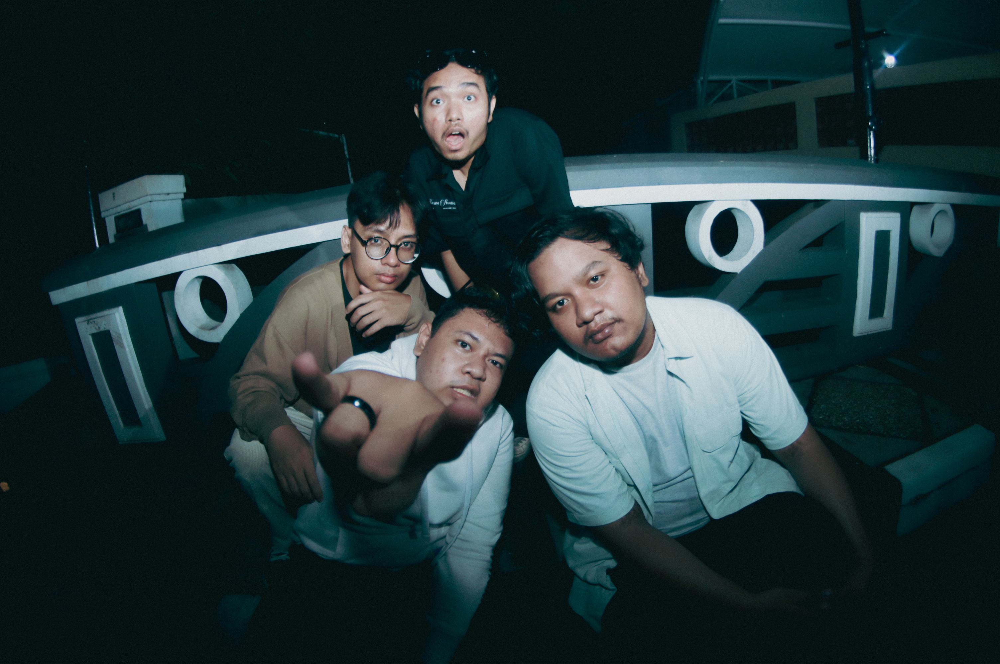
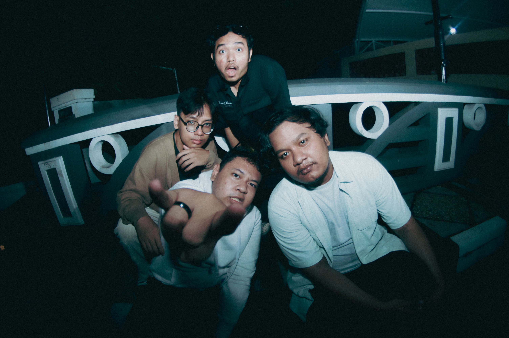

 

Welcome to Bliss Remains
Bliss Remains is a band from Indonesia that was formed in 2021. The band consists of four members:
- Fairus (Vocals)
- Mushab (Guitar)
- Tegar (Bass)
- Abyan (Drums)
Discography
Upcoming Events
- Bliss Remains Live Performance at Coklat Extra Friendship Moment - October 25, 2025 Click Here For More Info!!!